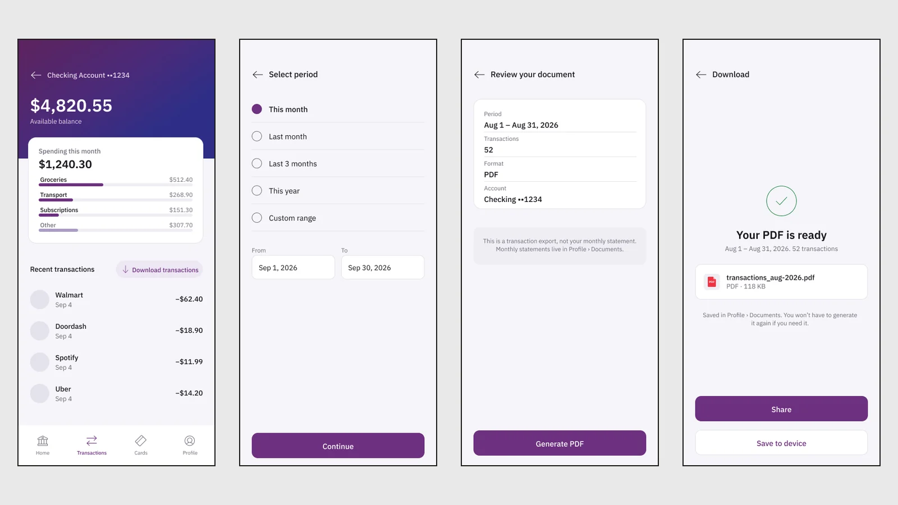
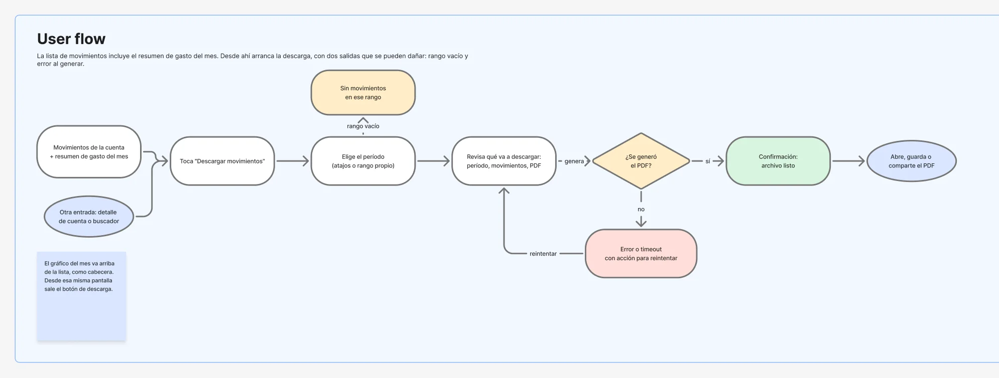
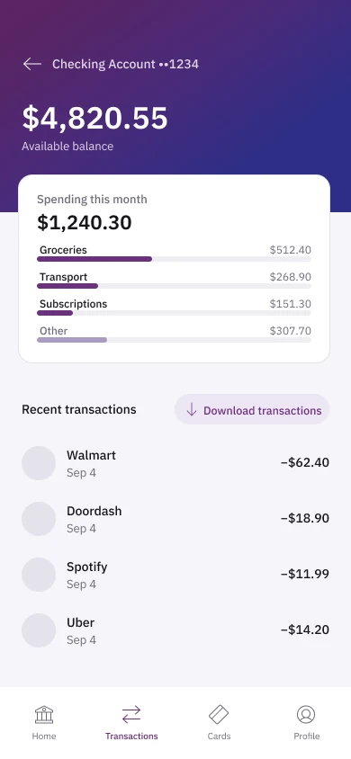
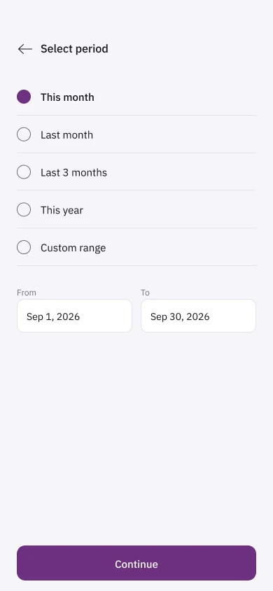
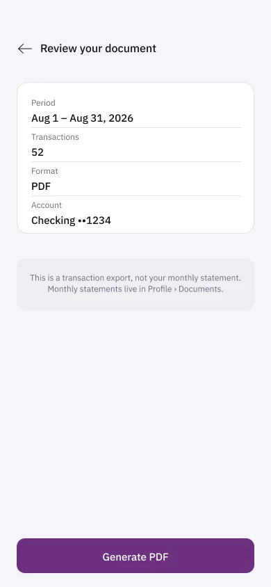
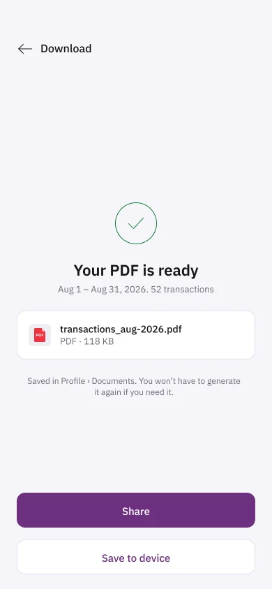
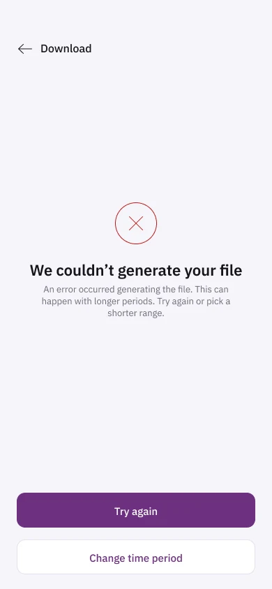
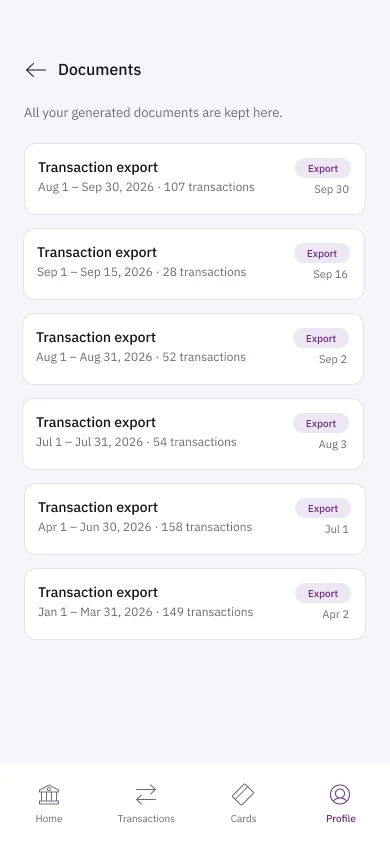
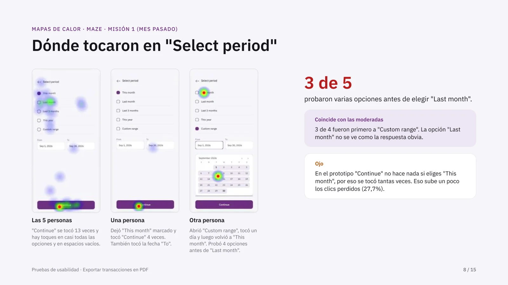

Movimientos en PDF
Un reto de diseño de producto: que los clientes de un banco digital descarguen sus movimientos en PDF sin salir de la app ni escribirle a soporte. Lo resolví de principio a fin: investigación, flujo, prototipo en Figma y pruebas de usabilidad con 9 personas.

El reto
El brief plantea un banco digital en Estados Unidos que recibe muchos tickets de soporte por una tarea simple: descargar el historial de movimientos, para el contador, una solicitud de crédito o las finanzas propias. La función existe, pero está escondida y obliga a ir a la web o escribirle a un agente. La meta del brief: bajar esos tickets un 40 % en dos trimestres.
«El problema central no es la pantalla de descarga: es encontrarla.» Cómo planteé el reto
- Encontrarla sola, sin preguntarle a nadie.
- Saber qué pide antes de confirmar: período, movimientos y tipo de documento.
- Entender la espera mientras el archivo se genera.
- Salir de un error sin empezar todo de nuevo.
Investigación
Comparé cómo resuelven el mismo paso tres apps de banca y me quedé con una idea de cada una.
- Revolut
- El histórico llega hasta la fecha de apertura de la cuenta, en vez de un límite inventado, y el rango es libre.
- Chase
- La exportación solo existe en la web de escritorio: la prueba de que el problema del reto es real.
- RappiPay
- Separa bien los meses y los años, pero la opción queda escondida detrás de varios menús.
De ahí salieron cinco reglas para el diseño:
- 01
Donde ya está mirando
La descarga vive junto a los movimientos, no en Ajustes.
- 02
Sin sorpresas
Antes de confirmar se ve el período, los movimientos y el formato.
- 03
La espera se explica
La app dice cuánto puede tardar y qué pasa si sales.
- 04
Todo error tiene salida
Reintentar o cambiar el período, nunca un callejón.
- 05
El archivo no se pierde
Todo lo generado queda en Perfil › Documentos.
Flujo
La descarga arranca en la lista de movimientos, que abre con el resumen de gasto del mes. Los atajos de período cubren los casos comunes: «últimos 3 meses» calza con el trimestre del contador y «este año» resuelve los impuestos en un toque.

Prototipo
Prototipo de alta fidelidad en Figma, en inglés como pedía el reto, con componentes y variantes para cada estado del selector de período.






Pruebas de usabilidad
Probé el prototipo con 9 personas: 4 en sesiones conmigo, pensando en voz alta, y 5 por su cuenta en Maze. Las mismas tres tareas: descargar el mes pasado, descargar un rango de fechas y encontrar los documentos.
- 9 de 9
- completaron todas las tareas
- 8 de 9
- dijeron que usarían la función
- 1 de 4
- eligió «Last month» a la primera: el punto más débil

-
H1
«Last month» pasa desapercibido
3 de 4 fueron primero a «Custom range», y en Maze fue la tarea con más clics perdidos (27,7 %). Propuesta: «This month» y «Last month» como botones grandes, con el rango personalizado aparte.
-
H2
No queda claro dónde se guarda el PDF
Hubo quien tocó «Share» para guardar, y 2 de 5 buscaron los documentos dentro de la descarga. Propuesta: «Save to device» como botón principal y un acceso directo a Documentos al terminar.
-
H3
El calendario no dice cómo moverse
Flechas pequeñas y un paso de «From» a «To» que pasa inadvertido. Un problema menor. Propuesta: flechas de 44 × 44 px, el nombre del mes tocable y un aviso «Ahora elige la fecha final».
«Ojalá fuera tan fácil en todas las apps de banco.» Participante en Maze